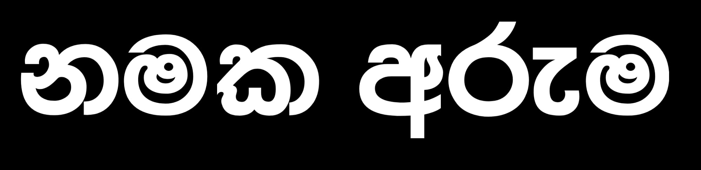
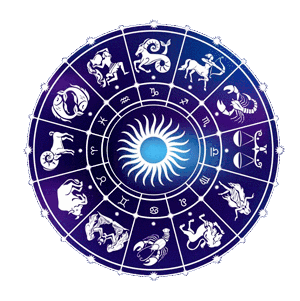

අරුතැ'ති - ගණ බලැති
නැකතට සුබම සුබ ඇති
හෙළ අබිමන රැකෙන
වෙසෙසි නම් තබමු උතුම් දරුවන ට........
ඔබට අවැසි සේවාව සඳහා මෙතැනින් පිවිසෙන්න
👇🏻
අපගේ සේවාවන්
සඳ, හිරු, තරු, උපත ලැබ, සොබා දහමින් විශ්වය බිහිවුණු දා සිට හෝ, දෙවියන් බඹුන් ලෝකය මැවූ දා සිට හෝ,කලක් ගත වූ විටදී හෝ,
තැනක්, අවකාශයක්, ද්රව්යක්, ඕනෑම සත්ත්වයෙක් වෙන වෙනම හඳුනා ගැනීම සඳහා නමක් බාවිත වේ.
එලෙසම අලුත ඉපැදෙන දරුවණට නම් තැබීම, අපට සිතිය නොහැකි තරම් පැරණි ඉතිහාසයක සිට පැවත එන වෙසෙසි කටයුත්තකි .
නම් තැබීම සඳහා මුල් බවින් උපකාර කරගනුයේ පුරාණ ගණ ශාස්ත්රයයි. ඒ සඳහා ජ්යෝතිෂ්ය ශාස්ත්රය ද එක්තරා ආකාරයකට යොදා ගනියි.
පොරණ හෙළ මහා පඬුවන් විසින් පවත්වාගෙන ආ, මෙම ගණ ශාස්ත්රය සිරි ලකට තිලිණ කිරීමේ පුරෝගාමී පුද්ගලයන් රැසක් සිටි අතර,
මහා කිවිවර වෙල්ලාල ජයමහ, කුමාරතුංඟ මුණිදාස, කලාසූරී අරීසෙන් අහුබුදු සුරුවන් වැනි වියත් පඩුවන් පිළිබඳව වෙසෙසින් සඳහන් කළ හැකියි.
අලුත උපන් බිලිඳාට අරුතැති නමක් තැබීමේදී උසුළු විසුළු වලට ලක් නොවෙන තේරුමක් තිබිය යුතු සේම, ශබ්ද රසයත් එසේම විය යුතුය.
නම් වල මුලකුරු බාවිතයේදී විහිළුවට ලක් නොවිය යුතුය. විපුල පල ඇති අරුත්බර නමක්, වැඩිහිටියන්ගේ මනාපය පරිදි කැමති ශබ්දයකට,
හෙළ ආරට, ඉංග්රීසි ආරට, ඉන්දියානු ආරට, ජපන් ආරට, ආදියෙන් තැබිය හැකිය. වෙසෙසින් ගණ දොස්, ස්වර දොස්,යෝනි දොස්,
නැකත් දොස් නැති, පල ඇති, නමක් තැබීම ඉතාම යහපත්ය.
👉🏻මෙහිදී නාම කරණ කටයුතු, අවස්ථා කීපයක් සඳහා යොදා ගනු ලබයි.
අලුත අරඹන නව ව්යාපාරයට
පවතින ව්යාපාරයේ සුබ අසුබ හෝ ගණ බලා ගැනීමට
නිවසට නම තැබීම
ඉඩමට නම් තැබීම
වාහනයට, සංවිධානයට, පක්ෂයට, ප්රසංගයට, වේදිකා නාට්ය, ටෙලි නාට්ය,
චිත්රපටි,නව කතා, කෙටි කතා, කවි පොත්, සඟරා, පත්තර ආදියට
ගීතයක ගුණ දොස් බැලීමට
මංගල ආරාධනා පත්ර සකසා ගැනීමට
ආදී සුබ කටයුතු වලදීය.මෙසේ ගණ දොස් විමසා බලනුයේ සුබ පල ලබා ගැනීමේ බලාපොරොත්තුවෙනි.
ව්යාපාර නාමකරණයේ දී ස්වර දොස්, යෝණි දොස් බලා සුබ ගණයකට නම තැබීම සිදු කරයි. හඳහන මෙහිදී මූලික වන්නේ නැත.
ව්යාපාරය සඳහා මුල් වන්නා සහ දායක වන්නන් තම පවුලේ හෝ වෙනත් අය, ව්යාපාරය කරණ නගරය, ගම,
රට හා ව්යාපාරයේ ස්වභාවය, ගණ බැලීම සඳහා යොදා ගැනීම සිදු කරනු ලබයි. රටට, නගරයට, ව්යාපාරයේ ස්වභාවයට
අනුව ව්යාපාරයේ නම ඉංග්රීසි හඬ, ජපන් හඬ,සිංහළ හඬ ආදී වශයෙන් සුදුසු අයුරින් යොදා ගනියි. නමක් සෑදූ කල ඊට අදාළ ග්රහයා,
වර්ණ හා සුබ පල ආදිය ද නම ගන්නා අවස්ථාවේදී දෙනු ලබයි.එවිට LOGO (වෙළඳ ලාංඡනය) සෑදීමට,
නාම පුවරුව සෑදීමට එම කරුණු කදිම පිටිවහලක් වෙයි.
රෙක්ස් හැමිල්ටන්
කලා භූෂණ,
ගණ ශාස්ත්ර නාමකරණ වේදී , මුළු දිවයිනටම සාම විනිසුරු සහ කලාසූරී අරීසෙන් අහුබුදු සූරීන්ගේ හිටපු ලේකම්,
0777364554
0777797174